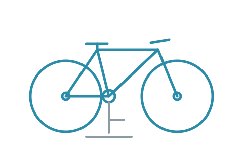

Bike repair and tune-ups in Millbrook
Millbrook Cycle Works is a fictional bicycle workshop invented for software testing. Every page on this site is placeholder content.
We service road, gravel, mountain, e-bike and cargo bike drivetrains, brakes and wheels, and we write up a quote before any work starts.

How a repair works
-
Drop off
Bring the bike in. We check it over and write up a quote while you wait.
-
Approve
No work starts until you have agreed the quote. Parts are listed separately from labour.
-
Collect
Most jobs are ready in two to three working days. We text when your bike is done.
Workshop hours
- Tuesday to Friday
- 08:00 to 18:00
- Saturday
- 09:00 to 15:00
- Sunday and Monday
- Closed
Not sure what your bike needs? Read the frequently asked questions or see the price list.